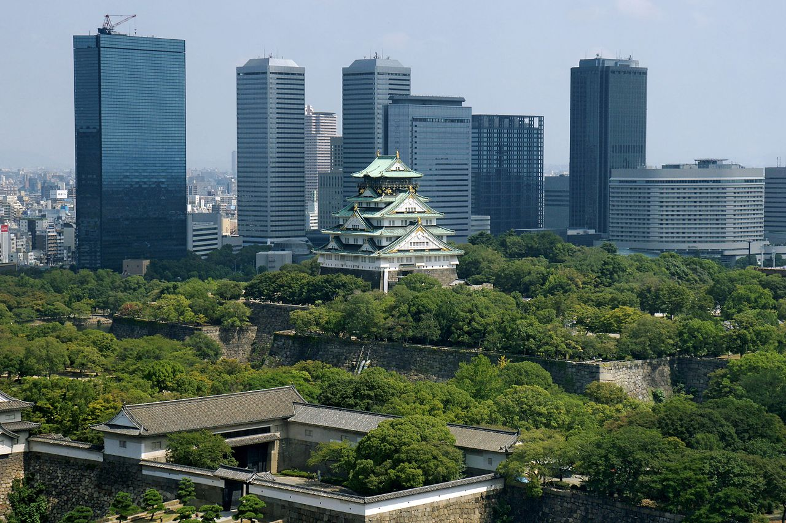

Japan

Japan, is an island country in East Asia. It is situated in the northwest Pacific Ocean, and is bordered on the west by the Sea of Japan, while extending from the Sea of Okhotsk in the north toward the East China Sea, Philippine Sea, and Taiwan in the south. Japan is a part of the Ring of Fire, and spans an archipelago of 6,852 islands covering 377,975 square kilometers (145,937 sq mi); the five main islands are Hokkaido, Honshu (the "mainland"), Shikoku, Kyushu, and Okinawa. Tokyo is the nation's capital and largest city, followed by Yokohama, Osaka, Nagoya, Sapporo, Fukuoka, Kobe, and Kyoto.
Cities
Tokyo, is the capital and largest city of Japan. Formerly known as Edo, its metropolitan area (13,452 square kilometers or 5,194 square miles) is the most populous in the world, with an estimated 37.468 million residents as of 2018; the city proper has a population of 13.99 million people. Located at the head of Tokyo Bay, the prefecture forms part of the Kantō region on the central coast of Honshu, Japan's largest island. Tokyo serves as Japan's economic center and is the seat of both the Japanese government and the Emperor of Japan.
Saitama, is the capital and the most populous city of Saitama Prefecture, Japan. Its area incorporates the former cities of Urawa, Ōmiya, Yono and Iwatsuki. It is a city designated by government ordinance. Being in the Greater Tokyo Area and lying 15 to 30 kilometres north of central Tokyo, many of its residents commute into Tokyo. As of 1 February 2021, the city had an estimated population of 1,324,854, and a population density of 6,093 people per km² (15,781 people per mi²). Its total area is 217.43 square kilometres (83.95 sq mi).

Osaka, is a designated city in the Kansai region of Honshu in Japan. It is the capital of and most populous city in Osaka Prefecture, and the third most populous city in Japan, following Special wards of Tokyo and Yokohama. With a population of 2.7 million in the 2020 census, it is also the largest component of the Keihanshin Metropolitan Area, which is the second-largest metropolitan area in Japan and the 10th largest urban area in the world with more than 19 million inhabitants.